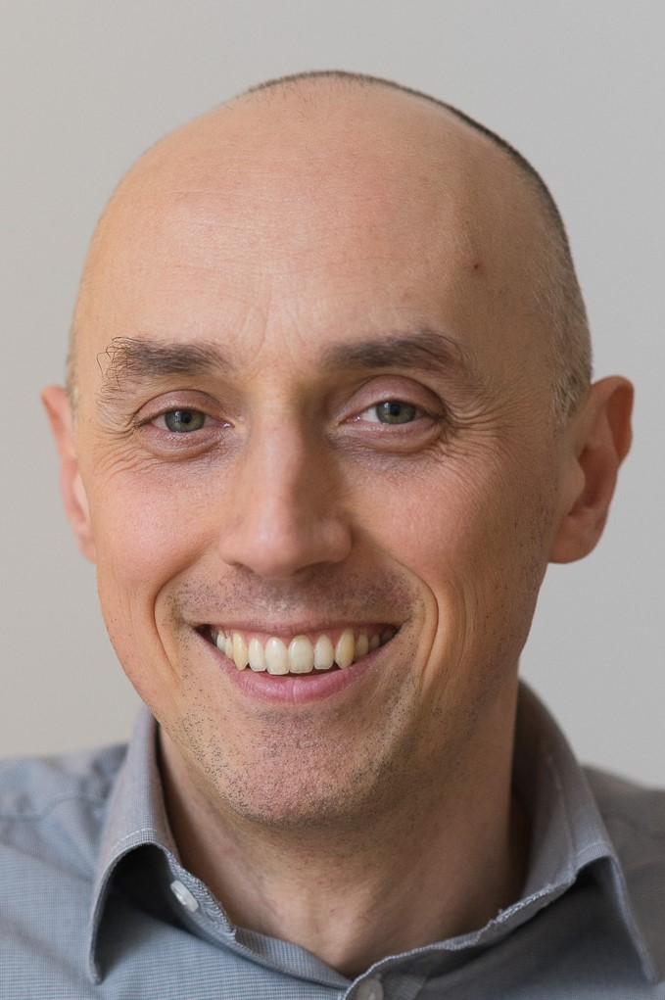

Education-wise I am rooted in mathematics. After a two semester misadventure with mechanical engineering, I’ve always considered mathematics to be my true calling. In 2002 I completed a thesis on percolation theory on trees and earned a Master of Science degree at The University of Warsaw. Before that I earned a Bachelor’s of Science degree after submitting a diploma work that dealt with groups acting on trees through automorphisms. Next to mathematics, I’ve been also fond of computer science, and although I have no formal education in the field, I have spent thousands of hours learning to code and writing programs starting with Basic, Pascal, Fortran, SQL, VBA under excel, C, Octave, Python and R. As machine learning algorithms (or data science if you will) begun their victory march in terms of popularity, I also got more interested in this topic. In 2019 I completed in a one year post-graduate university course on data science with applications. My diploma work involved training a computer to play tic-tac-toe.
In general, dabbing with science is an important part of my life. Some of my friends regularly amend their reading lists, other maintain lists of TV series worth watching. I fancy a list of things that I would like to study and experience the bliss of at least gaining some insight into them, before my time is up. Currently, the top of my list includes quantum computing, reinforcement learning, statistical learning theory, relativity theory (what is time?), stochastic processes and stochastic calculus, homology theory and formal logic.
My professional activity has two main branches. Given an analytical background I naturally landed jobs that required data processing, creating reports and building predictive models. I worked on managerial reporting for insurance companies and for one mobile phone company. I modelled insurance tariffs and predicted sales. A few years into my career I was challenged to take up project management (and people management along with it), which initially went quite well, but I eventually got worn off, as apparently I am the type of person that likes to get his hands dirty. Currently I am involved in business analysis and function point analysis, i.e. measuring functional sizes of applications.
Along with age, appetite for a meaningful and satisfying job grows. I am desperate to return to data analysis, although this time on an upper level, including exploitation of machine learning algorithms, and modern data processing methods. My dream job, that I am searching for, will require of me foremost:
Privately I am a husband and a father of two wonderful teenagers, a care taker of two cats, an avid gardener, a leisure sailor and a motorcycle enthusiast with a knack for repairing old motorcycles. By the way, when working on a bike, I am always under the impression that solving mechanical issues resembles solving mathematical problems. The thinking process seems alike, the only difference being the tools that you use. Instead of applying theorems, calculations, or other mathematical entities, you choose wrenches, pliers, drills, files and so forth. Perhaps this similarity is one of the reasons I enjoy it so much.